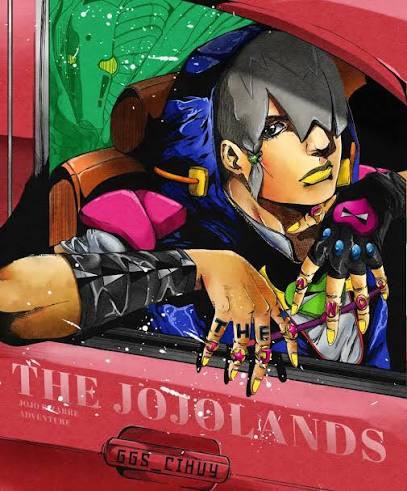

Newest JoJo MC!

Part 9: Jodio
Jodio Joestar is the newest JoJo Bizzare Adventure's main character. Set off in an alternate timeline Jodio is a drug dealer at his school, using his stand to both protect himself and get his way. Every other part character has deemed to be good by other defeating someone of evil or simply helping others. However with jodio we don't know his agenda and what he stands for.
To learn more about jodio: Jodio fandom